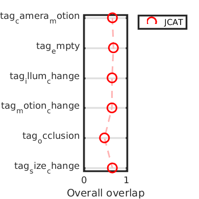
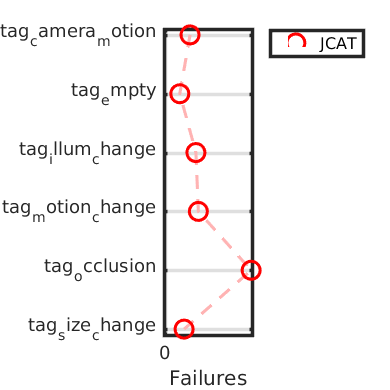
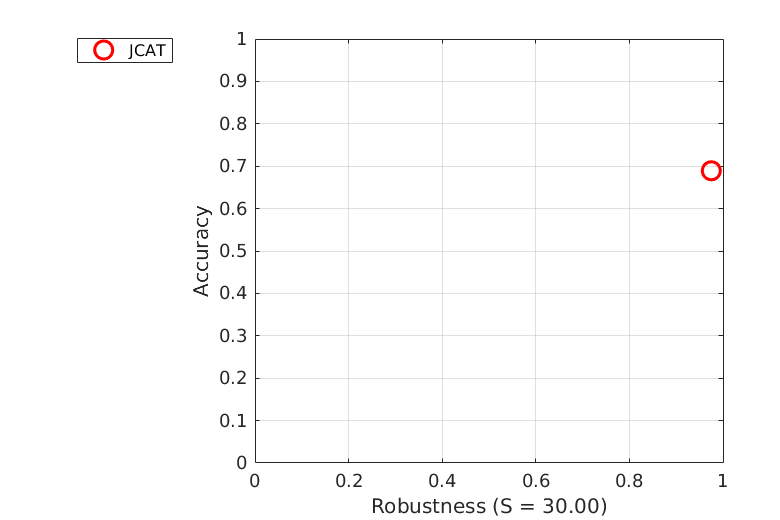
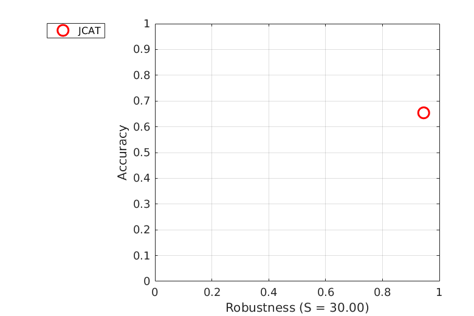
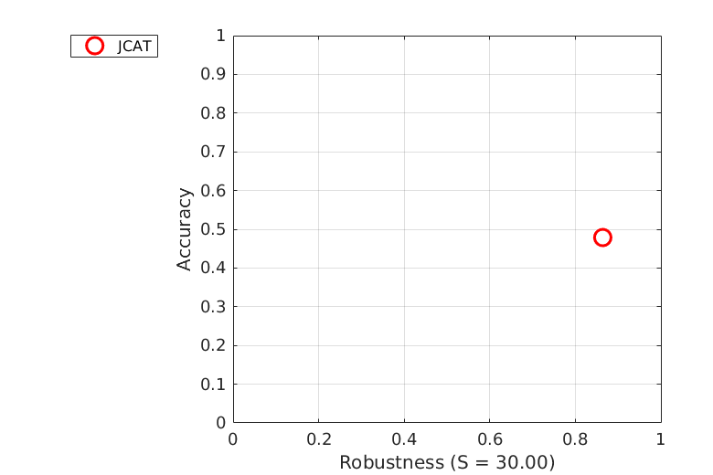

Accuracy-Robustness
Experiment baseline
AR plot for experiment baseline (mean)
AR plot for experiment baseline (weighted_mean)
AR plot for experiment baseline (pooled)
Accuracy
| tag_camera_motion | tag_empty | tag_illum_change | tag_motion_change | tag_occlusion | tag_size_change | Mean | Weighted mean | Pooled | |
|---|---|---|---|---|---|---|---|---|---|
| JCAT | 0.6658 | 0.6892 | 0.6570 | 0.6541 | 0.4787 | 0.6641 | 0.6348 | 0.6553 | 0.6607 |
Robustness
| tag_camera_motion | tag_empty | tag_illum_change | tag_motion_change | tag_occlusion | tag_size_change | Mean | Weighted mean | Pooled | |
|---|---|---|---|---|---|---|---|---|---|
| JCAT | 12.0000 | 7.0000 | 1.0000 | 8.0000 | 11.0000 | 4.0000 | 7.1667 | 8.4929 | 30.0000 |
Detailed plots

Orderings for overall overlap

Orderings for failures

AR plot for tag tag_camera_motion in experiment baseline

AR plot for tag tag_empty in experiment baseline

AR plot for tag tag_illum_change in experiment baseline

AR plot for tag tag_motion_change in experiment baseline

AR plot for tag tag_occlusion in experiment baseline
AR plot for tag tag_size_change in experiment baseline